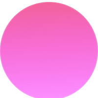
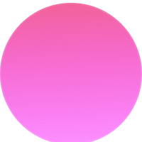

This is an exploratory playtesting research project I led at Blue Herb Software. The high level objective of the study is to discover usability positives and issues and assess gameplay balance, thus to inform the late stage development of the game.
This project showcases my leadership skills as I spearheaded the entire user research process and led the development team to implement design changes based on research findings.
The game developers needed evidence from research to determine key focuses for improvements before launching the game in 2025. Some key goals we have:
Usability Research Goals
Design Research Goals

To achieve these goals, I decided to conduct a usability review with 1 usability specialist, which allowed us to analyze the design intent and evaluate the system against usability guidelines, principles of usability-related fields, and the reviewer’s expertise and past experience. The review was divided into 2 playtesting sessions for the first half of the game and the second half of the game.

When launching the game for the first time, players are poorly onboarded onto the game’s mechanics. The current state of the game lacked a proper tutorial for the core mechanics, which ended up soft-locking players when mechanics were needed to clear early rooms.
During the onboarding experience, players need to effectively navigate the game world. In the beginning, key characters are revealed, game controls are familiarized, and the narrative context is shared. These help set the scene for players and prepare them for the core gameplay and progression loops.
Upon starting the game file, the player will enter a cutscene and then be given the opportunity to control the main character. Usually, the player will be prompted to continue with an action or a supporting character would guide the character through the basic mechanics of the game, either in a separate space apart from the story or in a prologue scene.
However, Bones Beneath pursued a very subtle onboarding strategy that didn’t effectively prepare users for the game’s content. It relied heavily on symbols engraved into the background. It’s hard for players to recognize symbols without prior context thus soft-locking players from clearing the content.
For additional findings and learnings, please contact celinenguy03@gmail.com.

Development Impact
Design Impact
Product Impact


 
